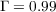
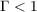

38As an illustration, consider a consumer for whom , and . This consumer will save the amount necessary to ensure that growth in market wealth exactly offsets the decline in human wealth represented by ; total wealth (and therefore total consumption) will remain constant, even as market wealth and human wealth trend in opposite directions.